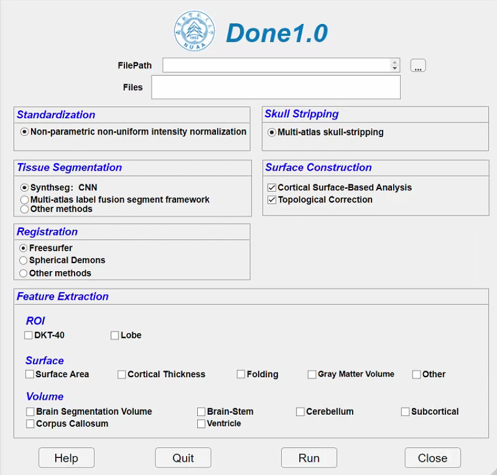

一、软件介绍
Done是一款深度融合医学图像处理技术、具有医学诊断功能的专业级工具箱，由南京航空航天大学计算机科学与技术学院、人工智能学院学生团队开发。该软件基于MATLAB平台开发，专注于婴幼儿大脑影像数据分析领域，致力于为非影像学专业背景的研究人员提供一套高效、精确、操作便捷的大脑影像分析工具。
该平台功能完备，全面涵盖了结构磁共振影像（Magnetic Resonance Imaging, 简称MRI）数据预处理、后期分析和结果可视化等多个关键流程。软件依托开源的FreeSurfer库和多个Python脚本，通过对各函数进行优化改进和深度整合，实现了对婴幼儿大脑MRI数据的全自动、多步骤端到端分析。具体到预处理流程，软件能够高效有序地完成图像格式转换、图像标准化、去头皮、组织分割、皮层重建和配准等一系列操作，有效去除图像中的噪声干扰，统一图像格式与标准，精准提取脑部组织信息；在后期分析阶段，软件支持从皮层水平和体素水平等多个维度提取多种大脑结构和形态学特征。软件能够自动将处理结果整合成标准的PDF报告，便于研究人员查验和使用。此外，软件还具备动态脑部影像的可视化功能，支持医生和研究人员从多个视角观察和分析脑部结构，为临床诊断和科研工作提供坚实可靠的依据。

点击下载二、安装方法
为保证软件运行稳定，减少使用过程中因软件更新引发的版本适配问题，建议用户使用MATLAB R2022b版本。以下是软件的具体安装步骤：
- 前往Docker官网下载并安装Docker Desktop软件。启动Docker Desktop，打开本机终端（可选择cmd或Powershell），输入指令docker pull crpi-871vgyf837zm6nsl.cn-shanghai.personal.cr.aliyuncs.com/matlab_c/matlabapp:1.0，拉取镜像，在此期间，请务必确认您的电脑已成功安装Docker Desktop且该软件处于运行状态。指令执行成功后，系统会从指定的阿里云仓库地址下载 matlabapp:1.0 镜像至您的本地Docker镜像库中。需留意的是，在拉取镜像到本地Docker 镜像库时，默认的下载存储路径为本机C盘，因此建议您确保C盘已预留足够的内存空间（至少50G，镜像实际大小为39G）。
- 拉取镜像成功后，输入指令docker run -it --name matlab_c crpi-871vgyf837zm6nsl.cn-shanghai.personal.cr.aliyuncs.com/matlab_c/matlabapp:1.0 /bin/bash来运行镜像，创建容器实例。
- 以管理员身份运行MATLAB，点击mlappinstall文件在MATLAB中进行安装。该软件将自动安装至MATLAB的APP中。
三、使用方法
参考 help文档
四、关于我们
请通过1234567890@qq.edu.cn来联系我们